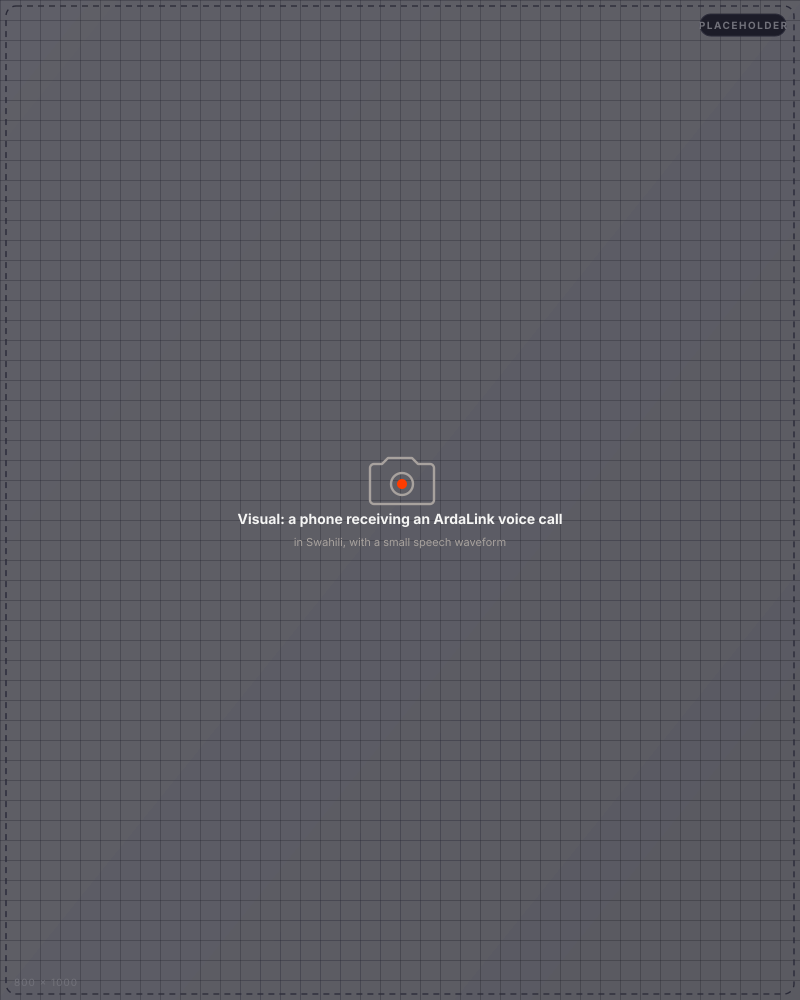

The herder's journey,
start to finish.
What she actually sees and hears. The exact menus, the exact replies. Sandbox-verified end-to-end — what you see here is what the live phone will see.
She dials *123*8#
USSD session opens. No data plan, no app, no signup.
1 · 2 · 3
Brief · Water · Call me back. Two taps to her answer.
Swahili or English
Concise. ≤160 chars on SMS. Fits a 2G phone screen.
ArdaLink calls her
A real conversation in her dialect. She answers. We listen.
What she said
Her answers feed the next alert. The system gets smarter.
Six taps from dial-tone to goodbye.
→ POST /api/ussd-callback text="" ← 200 CON ArdaLink — Bula Pesa 1. Bula Pesa (drought brief) 2. Malisho (water points) 3. Ongea na AI (voice call) 4. Toka → POST /api/ussd-callback text="1" ← 200 CON Bula Pesa brief: 1. Kwa Kiswahili (Swahili) 2. In English 0. Rudi / Back → POST /api/ussd-callback text="1*1" ← 200 END Bula Pesa leo: 12% ya eneo limeathirika. Hatari: high. Piga simu ArdaLink kwa ripoti kamili. → POST /api/ussd-callback text="2" ← 200 END Malisho / Water points: 1. Bulla Pesa Borehole (SW, ~2km) 2. Ngare Mara Spring (NE, ~9km) 3. Kambi Garba Dam (SE, ~14km) → POST /api/ussd-callback text="4" ← 200 END Asante. Kwaheri.
Run it yourself: make sandbox-ussd from the repo. No live phone needed.
When the satellite sees trouble, we call her.
We compose a brief in Swahili ("the pasture in your ward is drying up, two weeks ahead of last year"). We call her number. She picks up. She tells us what she sees — how the cows look, how far the water is. We listen. Her answers go straight into the next intelligence cycle.
The first version runs in real time, in her dialect, on her 2G phone. The whole loop takes less than two seconds.
